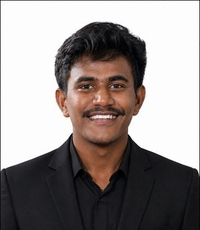

Hi, I'm Balachandran S
Cloud & DevOps Engineer (Fresher) with hands-on learning in AWS, Docker, Kubernetes, Jenkins and Linux. Interested in building, deploying and maintaining reliable cloud infrastructure.

Balachandran S
Cloud & DevOps Engineer
Karur, Tamil Nadu
About Me
A quick introduction
I am an MCA graduate (2026) with a three-month Cloud & DevOps internship. I have hands-on exposure to containerizing applications with Docker and deploying them on Kubernetes (Amazon EKS). My learning includes CI/CD with Jenkins, Linux administration and AWS networking. I focus on checking each deployment layer, including load balancer access, target health, pod readiness and security group connectivity.
Technical Skills
Tools and technologies from my learning and project work
Experience
Internship experience
Cloud & DevOps Intern
Twincord Technologies- Used Jenkins for testing, deployment, monitoring and automation within CI/CD pipelines.
- Worked hands-on with Docker, AWS cloud services and Linux administration to support cloud deployments.
Projects
Selected academic and technical projects
Dockerfile to Live on EKS
Containerized an NGINX application with a custom Docker image, pushed it to Amazon ECR and deployed it to Amazon EKS using Kubernetes Deployment manifests. Used multiple replicas, readiness checks and a Load Balancer Service. Validated load balancer access, target health, pod readiness and security group connectivity.
On-Stream Portal for Paint Shop
A web platform designed to showcase paint products and services through a customer-friendly interface and digital product management.
Culture & Heritage Platform
A community platform for sharing cultural traditions, with features for posts, likes, comments and user interactions.
Education
Academic background
Master of Computer Applications (MCA)
Kongu Engineering College, Erode
CGPA: 7.95B.Sc. Computer Science
Kongu Engineering College, Erode
CGPA: 7.24Higher Secondary
Higher Secondary Education
79.3%Training & Leadership
Additional learning and activities
Cloud Computing & DevOps Program
AWS Services, Linux, SQL, Python, Docker, Kubernetes and DevOps.
Data Science for Engineers
NPTEL course.
Leadership & Volunteering
Rotaract Club Coordinator; Youth Red Cross (YRC) Member.
Let's Connect
I'm interested in entry-level Cloud and DevOps opportunities.